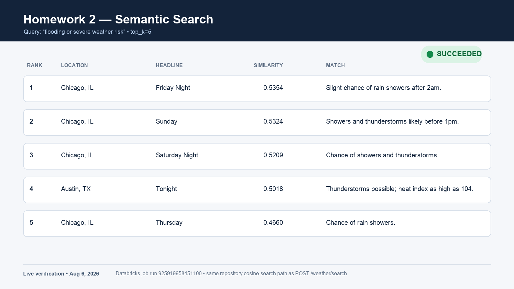
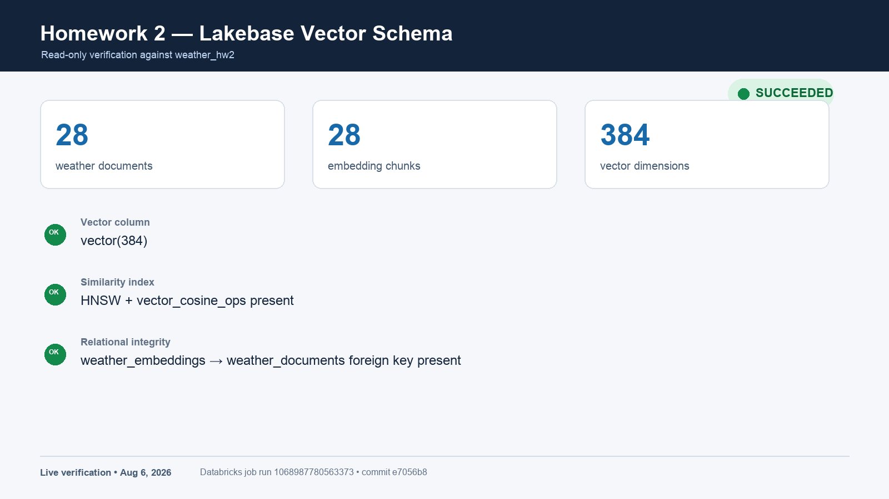

Databricks Free Edition · Context-engineering guide
Build Weather Intelligence with Lakebase Vector Search
Harvest unstructured National Weather Service narratives, preserve them as attributable documents, create MiniLM embeddings, and retrieve relevant context through PostgreSQL and pgvector.
The finished architecture
Location → Nominatim → NWS forecast and alerts → Lakebase documents → chunking → MiniLM vectors → pgvector cosine search → Flask JSON response.
The important lesson is not merely “store vectors.” It is to keep a durable document record, attach each vector chunk to that record, use the same normalized model for ingestion and retrieval, and preserve enough provenance to explain every result.
What this assignment teaches
- How to turn changing API responses into stable, idempotent documents.
- Why embeddings belong in a separate chunk table linked to source documents.
- How cosine distance becomes a similarity score in pgvector.
- Why managed Databricks runtimes and Databricks App builds need different dependency treatment.
- How to verify the pipeline at the API, job, and database-schema layers.
The data contract
Document
One normalized NWS alert or forecast period.
- Stable identifier
- Location and coordinates
- Source type and headline
- Narrative text and timestamps
- Content hash
- Raw payload plus source URL
Embedding chunk
One retrievable passage derived from a current document.
- Document foreign key
- Chunk index and text
- Matching content hash
vector(384)- Embedding model name
End-to-end walkthrough
Resolve a location without making geocoding mandatory
Accept city/state strings, coordinate objects, and two-number coordinate pairs. Only strings need Nominatim. Restrict geocoding to the United States, identify the client with a real User-Agent, cache results for the process, and allow no more than one public Nominatim request per second.
Design consequence: explicit coordinates keep the weather pipeline usable when public geocoding is unavailable or rate-limited.
Discover the forecast endpoint through NWS points
Call GET /points/{lat},{lon}. Do not construct a grid forecast URL yourself; use the forecast URL returned in the point response. Fetch active alerts separately with GET /alerts/active?point=lat,lon.
The point response is therefore routing metadata, while the forecast and alert responses contain the narratives that become documents.
Normalize alerts and forecasts into one document shape
Forecast narrative text comes from detailedForecast. Alert narrative text combines the description and instruction when present. Skip an item that has no non-empty narrative; an empty string is not useful retrieval context.
Use the NWS feature ID for alerts. For forecasts, hash normalized coordinates, period start, and period name. These identifiers make repeated synchronization an upsert rather than a duplicate-producing append.
Detect content changes explicitly
Compute a SHA-256 hash of the normalized narrative. Store it on both the document and its embedding chunks. A document needs embedding work when no chunk exists for its current content hash and model.
Create an isolated Lakebase schema
Keep Homework 2 in weather_hw2 so the shared Free Edition Lakebase project can also retain the graded Day 1 tables. Version the DDL in one SQL file. The App, sync task, and ingestion task execute it idempotently; read-only search and verification tasks assume initialization has already succeeded.
CREATE TABLE weather_hw2.weather_embeddings (
document_id TEXT NOT NULL
REFERENCES weather_hw2.weather_documents(id) ON DELETE CASCADE,
chunk_index INTEGER NOT NULL,
chunk_text TEXT NOT NULL,
content_hash TEXT NOT NULL,
embedding VECTOR(384) NOT NULL,
model_name TEXT NOT NULL,
UNIQUE (document_id, chunk_index, model_name)
);
CREATE INDEX ... USING hnsw (embedding vector_cosine_ops);Use direct PostgreSQL writes
The corrected Day 2 path uses psycopg2, not Spark JDBC. Normalize and batch-upsert documents, then insert vectors with an explicit %s::vector cast. This gives PostgreSQL control of conflict handling, constraints, and pgvector conversion in one transactional path.
INSERT INTO weather_hw2.weather_embeddings (..., embedding, ...)
VALUES %s
ON CONFLICT (document_id, chunk_index, model_name)
DO UPDATE SET embedding = EXCLUDED.embedding, ...;The implementation uses an execute_values template containing the vector cast so inserts remain batched.
Chunk text with overlap
Use an 800-character window with 100-character overlap. The overlap carries boundary context into the next chunk. Validate that overlap is non-negative and smaller than the chunk size; otherwise the sliding window cannot advance safely.
Most forecast periods fit in one chunk. Longer alert descriptions and instructions demonstrate why the chunking seam still belongs in the pipeline.
Load MiniLM once and normalize vectors
Use sentence-transformers/all-MiniLM-L6-v2 for both document chunks and search queries. It produces 384-dimensional vectors. Load one cached model per process, embed batches during ingestion, and request normalized embeddings.
Invariant: ingestion and query code must share the same model identifier, dimension, and normalization convention. A silent mismatch makes similarity scores meaningless or causes a database dimension error.
Replace stale chunks transactionally
For each changed document and model, delete all existing chunks, then insert the complete current chunk set in the same transaction. A rerun with no changed documents should report zero work rather than adding rows.
The successful live run inserted 28 chunks for 28 Chicago and Austin documents. A later read-only check confirmed the same counts.
Convert pgvector distance into a ranked result
Embed the query once and order rows by cosine distance. The <=> operator returns distance, so subtract it from one for a higher-is-better similarity value:
SELECT d.location, d.source_type, d.headline, e.chunk_text,
1 - (e.embedding <=> %s::vector) AS similarity
FROM weather_hw2.weather_embeddings AS e
JOIN weather_hw2.weather_documents AS d ON d.id = e.document_id
ORDER BY e.embedding <=> %s::vector
LIMIT %s;Return the source metadata and chunk text with the score. Retrieval without attribution is difficult to trust or debug.
Expose narrow REST interfaces
POST /weather/sync validates locations, clamps the per-location limit to 1–50, and reports partial failures without discarding successful locations. It returns 502 only if every location fails upstream.
POST /weather/search requires a non-empty string query, clamps top_k to 1–20, and returns {"matches": []} when no embeddings exist. / and /healthz provide lightweight deployment checks.
Separate App dependencies from job dependencies
The Databricks App build installs psycopg2-binary because it owns its isolated environment. A serverless Databricks Python task is different: its managed runtime already supplies native psycopg2.
psycopg2-binary in the serverless task caused a Python-kernel SIGABRT during import. Remove both psycopg2 packages from the task overlay and use the runtime driver. The task only needs the Databricks SDK and sentence-transformers added.Deploy from the Homework 2 source path
Reuse the existing ai-support-app resource and set its source-code path to homework-2. This preserves the Day 1 source at repository root and keeps the third Free Edition App slot available for the capstone.
Confirm the deployment events reach packages installed, app built, and app started. The deployed Homework 2 service uses the same database/lakebase-url Databricks secret as the ingestion job without logging it.
Verify every boundary, not only the final response
- Confirm the App is running and
/healthzreturns HTTP 200. - Sync Chicago and Austin; verify the resolved locations and document count.
- Run ingestion and inspect document, chunk, and inserted counts.
- Search for a weather-risk concept and inspect ranked, attributable matches.
- Verify document and embedding counts,
vector(384), the foreign key, and the HNSW cosine index directly.
What the verified result looked like


Retrieval check
Why keep documents and embeddings in separate tables?
The document table preserves the normalized source record and provenance. The embedding table can hold multiple chunks or models per document, and stale chunks can be replaced without rewriting the source identity.
What makes synchronization idempotent?
Stable source identifiers plus document upserts prevent duplicates. The content hash distinguishes an unchanged rerun from a changed narrative that needs fresh vectors.
Why does the query use 1 - distance?
pgvector's cosine <=> operator returns distance, where smaller is closer. Subtracting from one exposes a similarity value where larger scores rank higher.
Why was psycopg2-binary correct for the App but wrong for the job?
They are different execution environments. The App build needs to install its database driver; the managed serverless task already includes a native driver, and an overlaid binary wheel conflicted with that runtime.
Continue from here
Use the one-page Weather Intelligence checklist when rebuilding or demonstrating the pipeline. The implementation details and commands live in README_WEATHER.md.
Primary external references: National Weather Service API documentation, Nominatim usage policy, and pgvector documentation.